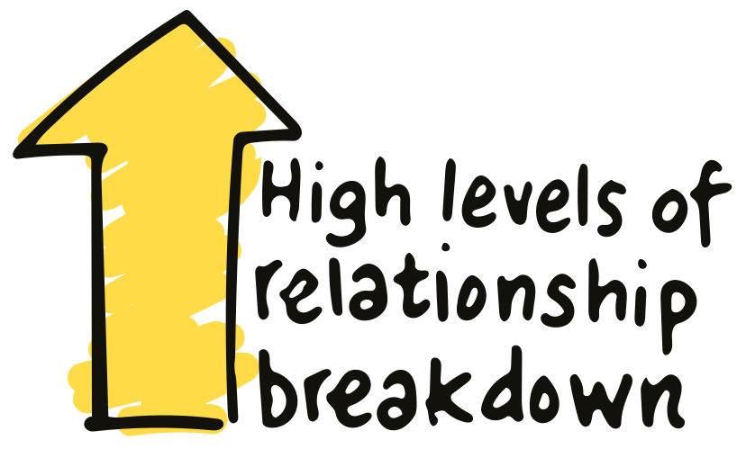
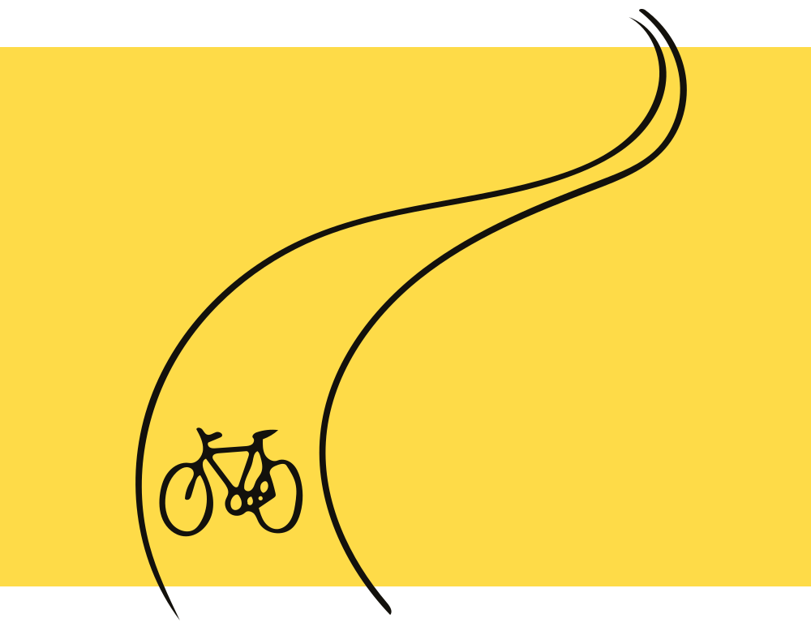
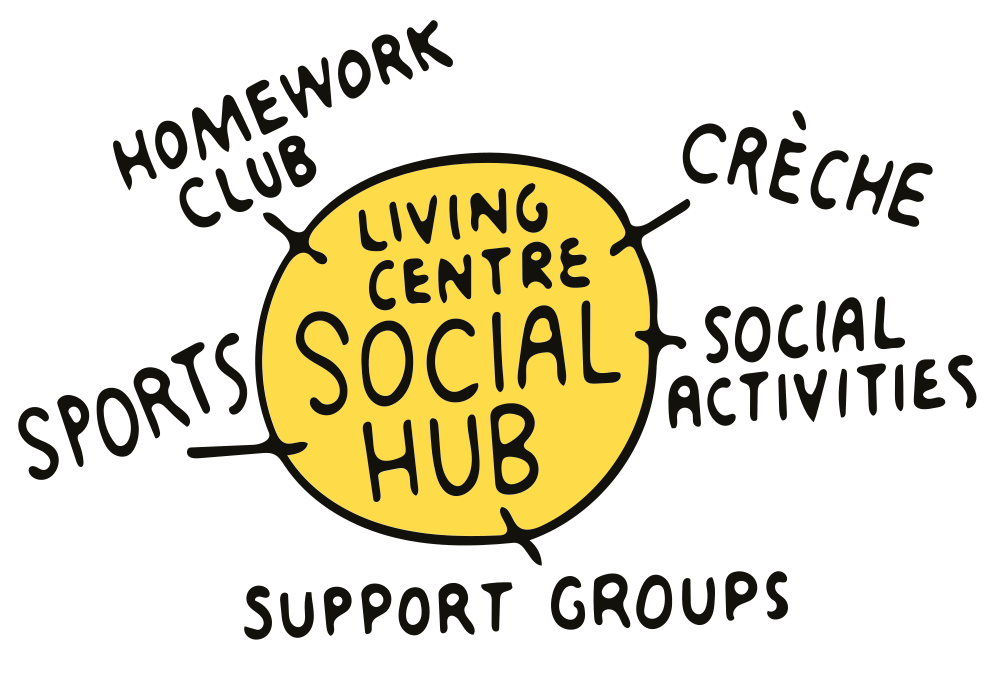
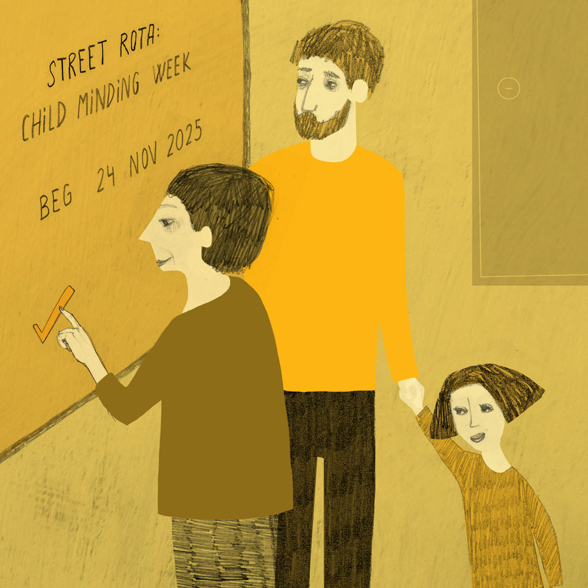
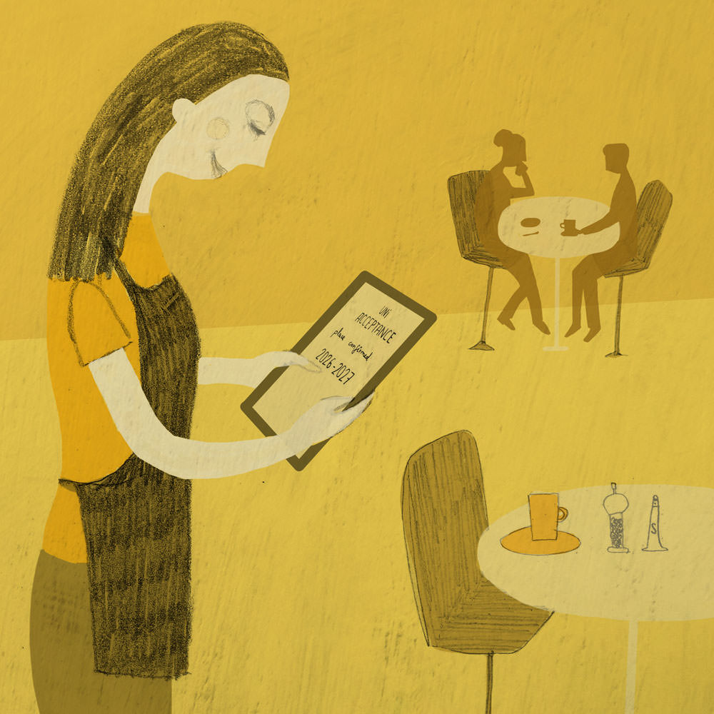
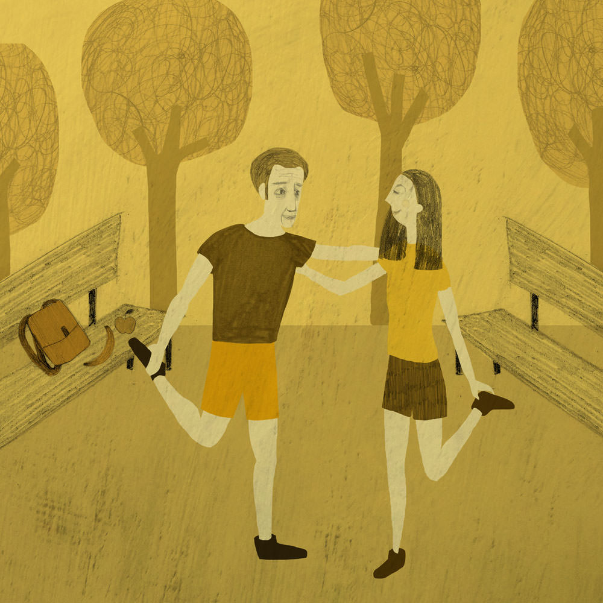

Main characteristics: Unconditional, understanding, tribal, caring, full of risk, compassionate, self reliant, co-operative, trusting, values led, positive, needs led, social unrest, people are connected to their community, person- centred, independent, sense of belonging, community based, community spirit, prevention is key, people are citizens, less formal support, neighbourliness, humanity driven, non consumption, resilient.
Today in 2025 a new community spirit, more usually associated with a perception of close-knit rural areas, has emerged in many parts of urban Scotland as citizens respond to a growing desire for a sense of belonging.
This has been driven by the collapse of overstretched services and high levels of relationship breakdown, poor mental health and the rise in single households.
Nowadays, much of the support given and received is informal, unstructured and ad hoc. Caring for friends and family has become a natural response and many have begun to eschew traditional services which had failed to meet their growing expectations long before radical reforms were implemented.
Hundreds of local organisations offering spaces have sprung up where people feel that they are included, supported, respected and are among like minded people. These range from places to address personal issues of addiction to bereavement and loneliness and all are designed to create a more compassionate and caring environment defined by trust and community.
These new groups not only offer kinship but increased self esteem and confidence through their training, volunteering and job opportunities. Glasgow-based Just Us, one of Scotland’s most successful urban community trusts, offers artisan bakery courses as well as courses in swordsmanship and corporate event hosting employs more than 200 staff and volunteers.
Eight years ago the government, facing ever increasing expectations of choice and a rapidly ageing population, finally acknowledged that it could no longer afford to support its citizens from the cradle to the grave.
By 2020 the post-war model for health and social care had been largely dismantled along with the welfare state. Everyone, including children, now receives a basic Citizen's Income (CI). In the case of adults, this is expected to be topped up by paid work. There is no other financial support for the unemployed, those on low incomes, the old or disabled.
Councils have a statutory duty to protect the most vulnerable children and adults but due to constraints on budgets they meet only the minimal requirements, and social workers and mental health officers often have to resort to crisis management.
Low morale and high sickness levels among council staff have been exacerbated by a leadership vacuum following the redundancy or departure of many senior social workers. With power and decision making in the hands of their bosses, workers on the ground lack the autonomy they need to make a difference. They play it safe with a heavy handed approach. Burned out staff are dangerously overstretched. A spate of scandals in children's homes has led to a loss of confidence in the service and fewer referrals into the system.
Health services have been drastically overhauled as a result of crippling cutbacks and increasing dependency on them from the growing number of older people.
A penalty system has been introduced for those who misuse health services. There is a £250 fine for making a non-urgent 999 call, while patients who access A&E services but are not deemed to be in urgent need of treatment are invoiced for the care they receive. Other parts of the health service operate a pay-as-you-go service. There is a flat £15 charge for a GP consultation and prescriptions.
The Curriculum for Excellence launched 15 years ago to raise aspirations and attainment in Scotland's schools has been extended following ever-improving exam results and student outcomes over the past decade.
An extensive pre-school service for all children from 18 months of age has been launched, school is now compulsory until 18 and citizenship and health and well-being are exam subjects at National 5 and Higher level.

By law, schools must ensure pupils do one hour of exercise or sport a day. Significant investment has also been made in creating a national network of cycle paths linking towns, cities and villages to encourage all citizens to be more active.
Today everyone is expected to take more responsibility for their own lives and many more now do so. Over the past five years there has been a significant reduction in demand for services and much greater self-reliance among individuals.
Uptake in first aid courses is at an all time high. Most families have at least one trained first aider among them to cope with minor injuries and demand for online health information from sites such as Dr Google has soared.
The overhaul of the health and social care sector has led to major career shifts for workers. A large number have moved into the growing voluntary and private sector or have set up on their own, often working privately for those willing to pay for care.
Significant numbers have retrained and are now working in a range of different professions, though family and friends often call upon their experience. Those remaining in the statutory sector feel overstretched and frustrated that they cannot do more to assist those requiring support. Citizens have become the new social care providers.
As a result of the proliferation of technology and efficiency savings within companies, people are more professionally mobile, many working freelance on zero hours contracts, often based at home, which enables them to be more responsive to the needs of the community.
Smart phones and tablet devices enable support to be obtained at short notice from friends and neighbours or rotas to be organised to ensure support needs are covered.
Multi-generational living has become the answer for a growing number of families. The new “sandwich generation” was highlighted in the 2021 Census, which showed the number of homes occupied by three generations of the same families has more than trebled in the last decade.
In order to meet their own and others’ needs, communities are willing to try new approaches to health and life issues. Individuals are no longer reliant on the state to provide solutions to their health or social problems.
Social networks have led to a significant rise in peer support groups, with Google Hangouts particularly popular. Following successful schemes in the US, a number of neighbourhood health watch schemes (NHW) have been established in Edinburgh, Glasgow, Aberdeen and Dundee.
Under the initiative, members of the NHW keep an eye on older residents and support each other's well being, inviting each other to walking clubs and spreading the word about nutrition and yoga classes. (DOG WALKING) They also check in on housebound residents.
Now, in 2025, time is the new currency. Citywide time banking networks, which allow people to swap skills and trades - from befriending to childcare, roofing to accountancy - are commonplace in Scotland's four main cities.
Community-run living centres have become the new social hubs. Operating from defunct or underused public sector buildings, for a peppercorn rent, these centres provide crèche facilities, homework clubs, sports and social activities and support groups for all ages. Staffed mainly by the recently retired and the “young” old, these places are so well used there is no need for any signs to direct people to relevant activities.
A number of community associations also provide training in trades and traditional skills but different models are constantly emerging. Entrepreneurial citizens in Glasgow and Edinburgh, for example, are pooling some of their universal income to set up not-for-profit health and well-being centres. These also offer bespoke paid-for services at cheaper rates than their private sector rivals to generate income to fund paid health and social care workers.
The German inspired Edinburgh Family House, which runs nursery provision alongside treatment for dementia patients, has been widely praised by the Dementia Scotland for its ground-breaking work. Pensioners accessing services at the EFH read books to children once a week while teenagers teach older people how to use computers and mobile phones.
Initiatives like this have contributed to Edinburgh being awarded a much-coveted “Wellbeing Community” charter mark.
Despite early fears that the Citizen's Income (CI) might provide a disincentive to work, today, in 2025, evidence is emerging that quite the opposite is true. The universal payment, which gives all citizens a basic standard of living, has removed stigma, stress and mental health issues for many. Those who previously suffered from lack of confidence in the workplace before CI, have found new confidence, desire and willingness for work.
The CI is, however, changing working practices in Scotland's proactive urban enclaves. While economic activity is required to match lifestyle wants and needs, increasingly parents are choosing to work part-time.
Current figures show fathers tend to put in a four-day week while mothers are working an average three-and-a-half-day week. People are using the time they would have worked to provide care and support for their families and immediate communities or to gain a better life balance.
Many have taken up sports-related activities from cycling to triathlons and salsa dancing to stay fit and healthy – a legacy from the 2014 Commonwealth Games in Glasgow. Many of the 1950s ‘baby boomers’ now in their early 70s but don't look it or feel it - are also economically and physically active and in good health. Digitally literate they are enjoying the benefits of technology to network and keep in touch with family and friends as well as for entertainment, only accessing services when absolutely necessary.
The reduction in demand for services across the general population has enabled the NHS to cope with rising demand from so-called “old” old. Pioneering research and major advances in diagnostic tools have transformed treatments and outcomes for patients.
However, despite the huge advances in technology, telehealth and telemedicine are not used widely as the government has deemed them a potential drain on resources, leaving private companies to exploit their potential.
In the absence of a state welfare system, charities and voluntary groups are playing a much larger role in supporting individuals and people with complex needs, but their funding is derived mostly from private grants and public donations and they increasingly rely on communities to provide volunteers.
As a result of the rising cost of living, more students are choosing to study closer to home or online. Many are also opting to join the growing number of apprenticeship schemes run by local employers, the successful completion of which often leads to permanent jobs.
Adult children tend to stay at home into their 30s, and when they leave, they live nearby, to stay close to friends and family.
House prices have stabilised and renting is the norm now that legislation has been brought in to stop landlords exploiting the private sector market. Greater protection for tenants and longer leases have led to stability and a greater sense of security.
However, citizens, who have the right to buy common land under government legislation, are increasingly choosing to build their own homes. Last year 100 BYOH projects were completed, including five community-led housing schemes.
A subgroup known as the Affluent Outsiders has chosen not to follow the community model. They prefer to buy their services and rely on economic activity to provide for their needs. They provide a sizeable income for the co-operative communities, hiring staff from personal assistants to gardeners and therapists.
The community-led approach has proved effective in driving up the health profile of Scotland's big cities. Diet has improved and well-being levels have increased while alcohol abuse, obesity and depression have fallen, even in areas once known for endemic deprivation, as citizens gain more confidence, self worth and self esteem.
A recent snapshot report by the World Health Organisation (WHO) suggests that health inequalities have narrowed in less affluent areas where social wealth has been created within communities.
Dr Hito Shukosi, WHO's senior health advisor, believes approaches like this have the potential to make a significant impact on life expectancy and health outcomes in Scotland's most deprived areas of Scotland. “Active participation leads to a more positive outlook, stronger relationships and healthier lifestyles,” (SPEECH BUBBLE) his report concluded.
A recent happiness survey carried out by Your Life magazine found significantly higher scores in areas where citizens took an active part community life compared to those who did not.
However, some community groups have been accused of being socially conservative, judgemental and tribal while the Scottish Social Services Council (SSSC), which now has a much reduced role, frequently points out the potential for abuse of adults and children to go unreported in the new laissez faire world of informal care.
In a separate development police are currently investigating at least four community trusts following allegations that they have been infiltrated by faith groups.
The withdrawal of the winter fuel allowance has added to the growing divide between the haves and have-nots among the retired, even in cohesive communities. Age Scotland believes many deaths among the older population last winter, when temperatures fell below -10ºC for three weeks, would have been avoided if there had been more care and financial support available.
The loss of free travel has also significantly reduced opportunities for older people to go to meet friends or pursue social activities, the charity said in evidence submitted to the Scottish Parliament's Health Committee.
“We are very concerned about the growing inequalities among some sections of the population,” it wrote “Not everyone is coping under this new system. Those with supportive networks and enough money are doing OK, but it’s a postcode lottery.”
In communities where there is little social cohesion and high levels of poverty, life in 2025 is very hard. The withdrawal of state support has meant that many vulnerable people have slipped through the net. The disabled and those with mental health problems who have no social networks find themselves excluded and there has been a rise in the numbers targeted by gangs who bully them or drug addicts who steal their mobile phones and electronic tablets.
Police officers often find themselves picking up social casualties with no resources to help them while trouble makers are fined or locked up under the government's new zero tolerance policy. More prisons have opened to cater for the growing number of offenders, providing community organisations with plenty of outreach work.
Homelessness, particularly among the young, is at record levels, and the increase in extreme weather events has now resulted in large numbers of rough sleepers being admitted to hospital with sunstroke or hypothermia.
Those who are socially excluded and those who have little social capital have become the new underclass.
Ann, 48, was a social worker with Edinburgh City Council until she lost her job as part of the radical overhaul of health and social care and has recently started working at the community-owned Edinburgh Family House.

She is enjoying the co-operative community spirit and particularly likes the autonomy she now has to make instant decisions without requiring approval from multiple managers as was the case in her previous job.
Ann, who works three days a week, lives with her husband Stuart, 49, a personal trainer, and their two adult daughters Ellen, 22, a PR assistant and part-time swimming coach, and 18 year old Caitlin, who has a learning disability.

Caitlin who gets lots of moral and practical support from her family and friends has a Saturday job in a café at the local youth centre. A beneficiary of full educational integration and the enhanced Curriculum for Excellence (CfE), she left school this summer with three Highers and is due to take up an events management degree course at Napier University this autumn.

Stuart’s line of work means he has plenty of good advice on healthy living and he is a good role model for his daughters. He runs free Fit for Life sessions for local teenagers at the nearby park or in the church hall – depending on the weather.
In her spare time Ann organises the stair cleaning and lawn cutting for the tenement building they live in and she is also a fund raiser for the local RNIB. Her mother, who lives with her sister Lindsay on the other side of Edinburgh, is 85 and was diagnosed with non-treatable age-related macular degeneration (AMD) five years ago. She still manages to keep active though, and has a number of hobbies, including gardening.
Ann and Stuart don't have a lot of savings but are managing to enjoy a good standard of living as well as a good quality of life as a result of the citizen's income. They go out regularly, go abroad once a year and run a car, though both tend to walk when they can to get the exercise. While Caitlin is quite dependent on her family, Stuart and Ian are confident that if anything were to happen to them she would be able to have a successful career and happy family life of her own as a result of the help and support and understanding of her needs by the wider community.
New types of housing schemes are popping up all over Scotland. Few, though, are as innovative as the Spring Gardens community development in Normington, discovers Amelia McBride.
The smell of barbecued food and the sound of music and laughter greet visitors well before they arrive at Spring Gardens, one of the country's most innovative community housing projects.
It's clear from the very start that this is not your average housing estate.
Built on part of the former Normington district hospital in five acres of land, Spring Gardens is the culmination of five year's of hard work and collaboration by sixty adults who wanted to create a new and more sustainable way of living based on self-sufficiency and wanting to live next door to people they know and trust.
The development consists of 35 homes designed and built by their owners plus a number of community facilities converted from old hospital buildings, including a laundry, a common house, offices and workshops and a small cinema.
The co-housing project was the brain child of IT manager Steve McQuarry, and his wife Jan, a nurse, who were inspired to go for a self build after losing out on a house sale for the fourth time in three years.
“We were fed up getting our hopes dashed and joked that we could have built one by now,” says Jan. “The idea of creating our own bespoke home really appealed to us so we decided to go for it but we struggled to find the right location until this site came up for sale. It was absolutely perfect. The only problem then was that it was too big for us but then we realised there were probably a lot of other people like us out there wanting the same thing and the plans got bigger and bigger.”
The couple set up a website advertising for neighbours to join the co-housing scheme and after receiving more than 120 applications they negotiated a deal with the NHS to buy the site.
The scheme members learned their skills on the job while a number took up courses on decorating, plumbing and tiling at Normington College, sharing their skills with each other.
The building project was led by two members of the group who work in the building trade.
“There were some really challenging moments financially and physically but it was worth it in the end,” smiles Steve, mentally totting up the number of small injuries he incurred hammering nails and sawing wood late into the night.
The energy efficient houses which range in size from two to five bedrooms are surrounded by acres of shared open space including a smallholding, a large vegetable garden, a substantial greenhouse and an impressively kitted out playground and activity area.
There are no private gardens. While maintaining the privacy of their own homes, the new residents, who have 35 children between them, jointly manage the land and shared facilities. The community ranges in age from six weeks to 75.
“We love our home,” says William Green, a local restaurant manager, who owns a three bedroom house in Spring Gardens . “It's the house we've always dreamed of having but could never afford.”
Residents share their individual skills which include husbandry, IT, arts & crafts and accountancy with their neighbours.
While most of the residents go out to work, some mothers with young children provide childcare while others, including retired members, take responsibility for the livestock which include ducks and hens and the development's two beehives.
Residents have at least two weekly communal meals and often more, depending on their schedules.
Inside the common house kitchen, artist and mother of two, Shelagh Magee, is buttering rolls while mentally counting paper plates and plastic cups.
One of her paintings hangs over the fireplace opposite the hand-made refectory table.
Spring Gardens offers her community spirit, support and a “wonderful environment” for her sons to grow up in. “I am not used to catering for quite so many,” the 29-year-old giggles. “I'm going to have to get used to doing this a bit faster.”
Magee admits some of her friends think this kind of community living is “a bit odd”. “They don't get it,” says Magee who has no doubt that she and her family are going to enjoy a better quality of life in Spring Gardens. “It's going to be an adventure living here. I don't think I am going to get lonely. I just hope I don't fall out with the neighbours,” she jokes.
Both the government and the Scottish Housing Association have taken great interest in the Spring Gardens development. “Projects like this offer a creative and sustainable solution to the historic shortage of suitable housing,” says Homes and Communities minister, Fergus Paterson.
The SHA is currently considering a number of schemes, including modular housing which has long been popular in Scandinavia for its flexibility and sustainability.
These fixed-price homes, which come complete with designer kitchens, luxury bathrooms and top of the range furniture can be delivered from the factory floor in just 12 weeks.
Additional floors up to three storeys high can be added to accommodate changes in need. “I think co-housing is the way forward, says SHA chief executive Clyde Driscoll. “These are the homes of the future.”